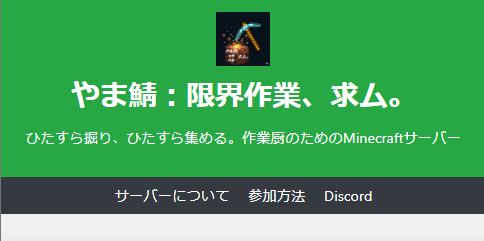

作品：[Webサイト開発]

作品の簡単な説明。：HTMLとCSSを使って作成したマイクラサーバーのWebサイトです。テーマはゲームっぽくで、訪問者が快適に情報を閲覧できるようデザインしました。
- **使用技術:** HTML, CSS
- **制作期間:** 3日
ここではサイト主が適当なことを発言してるので見てってくださいｗ
ちなみにブログの文章はAIにまとめてらってます。
作品の簡単な説明。：HTMLとCSSを使って作成したマイクラサーバーのWebサイトです。テーマはゲームっぽくで、訪問者が快適に情報を閲覧できるようデザインしました。

写真の簡単な説明。：適当にシャッター切ったらいい感じに撮れたやつです。